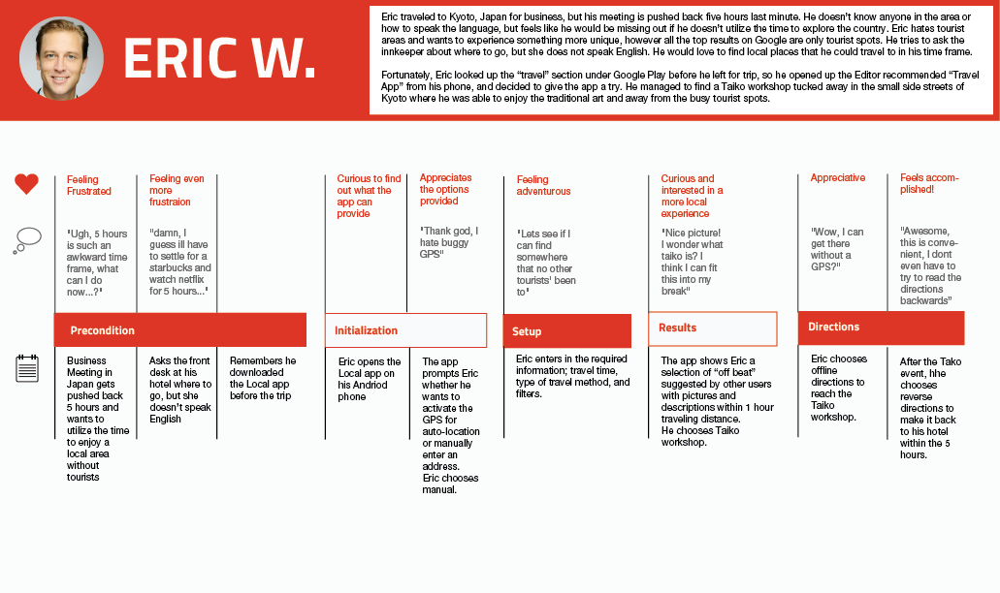

DESIGNATION
Local Guide was an exploratory project for Designation that consisted of creating a mobile application whose primary user would be people who are traveling. I did the UX and UI for this project.
The Local Guide App is a mobile application to meet user needs while traveling. Through user interviews I would determine what users' goals and needs are while traveling and translate that into a mobile app.
By reading through twenty user interviews, I was able to learn more about the needs and frustrations people had when they were traveling. I found that there was a need and desire for people to have local knowledge of their location and to be able to access location information quickly.
After learning about the different people who travel, I used an affinity diagram to make connections of what needs and frustrations of the users were. This led to creating two user personas that the application would be designed for. One persona was the famly man who travels for vacation with his family. The other persona was the business traveler, who travels because of work.
I also created a journey map for our users in order to understand their thoughts and feelings when traveling.
Next I sketched wireframes for a potential mobile app to meet the persona needs. Because the business traveler was often had limited time, I wanted to create an app that accessed information about surrounding destination. Because I was also designing for the family man, it was important to include information like cost and if it had different kid activities. Another main difference between the two personas was that one enjoyed more low key local joints and the other persona wanted more tourist attractions. I created a filtering system that allowed for users to choose if they wanted to search for tourist attractions or not. I used the application Pop to create a quick mockup of the app idea to test.
Once completing the wireframes, I conducted user tests for concept validation and usability. Some important changes that I made in regards to the feedback was giving the option to bookmark activities and making it clear that getting directions to a place was the main action for the app. With these new changes in mind, I created a prototype in Axure.
Now that the wireframes of the application were determined, next I needed to create a user interface design for it. To start my design process, I looked for ideas and inspiration from other travel and vacation related material.
After gathering various types of inspiration, I had a direction in mind that would fit with the mobile apps goals; something that conveyed the idea of quick and effortless. I used the font x and colors y and z to really reinforce the idea of a fast and easy to use app. I also wanted to be sure to include the excitement that comes with traveling to a new place.
I used my style tile to guide me through creating the screens for the app.